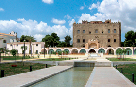

Lezione 6  islam
islam

Numerosi furono i contributi scientifici, artistici, letterari, economici e commerciali derivati dalla civiltà arabo-musulmana, che si sviluppò e fiorì in seguito alle conquiste e in particolare tra il IX e il XIII secolo. Nell’età abbaside, in particolare, l’incontro tra la tradizione araba e la cultura bizantina favorì una fase di rinnovamento e sviluppo. Furono fondate nuove città, come Baghdad e Il Cairo, mentre altri centri urbani, come Damasco, Córdoba e Samarcanda, crebbero e acquisirono maggior importanza. Le città divennero centri di intensa vita economica e attivi luoghi per gli scambi e i commerci, che si intensificarono, ampliando enormemente le loro rotte. Il risultato fu una maggiore circolazione di merci, che fece arrivare in Occidente e nel Mediterraneo prodotti nuovi e raffinati come le stoffe di Damasco, il cotone, il riso, lo zafferano, la cannella, il carciofo, la noce moscata, la canna da zucchero. Si diffuse l’uso della carta, che alcuni mercanti portarono dalla Cina. In agricoltura si sviluppò una nuova e perfezionata tecnica di irrigazione. Fiorirono le scuole, le biblioteche, le scienze matematiche e filosofiche, l’astronomia. Si deve agli arabi la diffusione dei numeri (di origine indiana) e la conservazione, traduzione e diffusione di opere di filosofi e medici greci come Aristotele e Ippocrate. Sono arabi, per esempio, i termini “algebra”, “chimica”, “zenit”. Anche nell’arte e nell’architettura la civiltà arabo-musulmana ha lasciato contributi importanti, come la moschea di Córdoba in Spagna, l’Alhambra di Granada (XIV secolo), il Taj Mahal di Agra in India (XVII secolo).